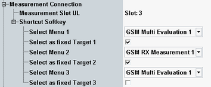

The "Measurement Connection" settings facilitate the transition from the "GSM Signaling" dialog to frequently used measurements.

Configures the slot evaluated by measurements running in parallel to the "GSM Signaling" application. The measurement slot is relevant for the GSM signaling measurement BER PS and for GSM multi-evaluation measurements. It is not relevant for GSM signaling BLER and BER CS measurements.
During a CS connection setup, this parameter is set automatically to the active CS timeslot. During a PS connection setup, it is checked whether the configured slot is an active PS UL timeslot - otherwise the first active PS UL timeslot is selected automatically.
While the combined signaling mode is active in the GSM multi-evaluation, the measurement slot setting in the signaling application and in the measurement are coupled. Changing one value also changes the other value.
Remote command:This section configures the three shortcut softkeys that provide a fast way to switch to selectable measurements. See also "Using the Shortcut Softkeys".
Selects a measurement. The corresponding shortcut softkey opens a dialog presenting this measurement as default target or uses the measurement as fixed target.
Configures and renames the corresponding shortcut softkey.
- Enabled: The softkey directly opens the measurement selected via "Select Menu".
- Disabled: The softkey opens a dialog box for selection of the target measurement.